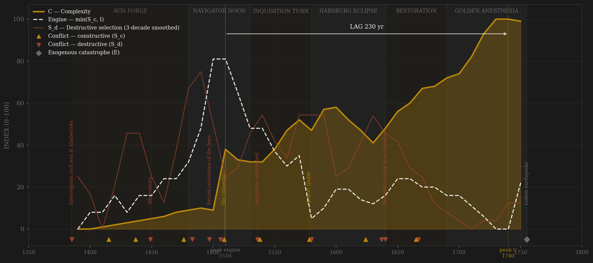
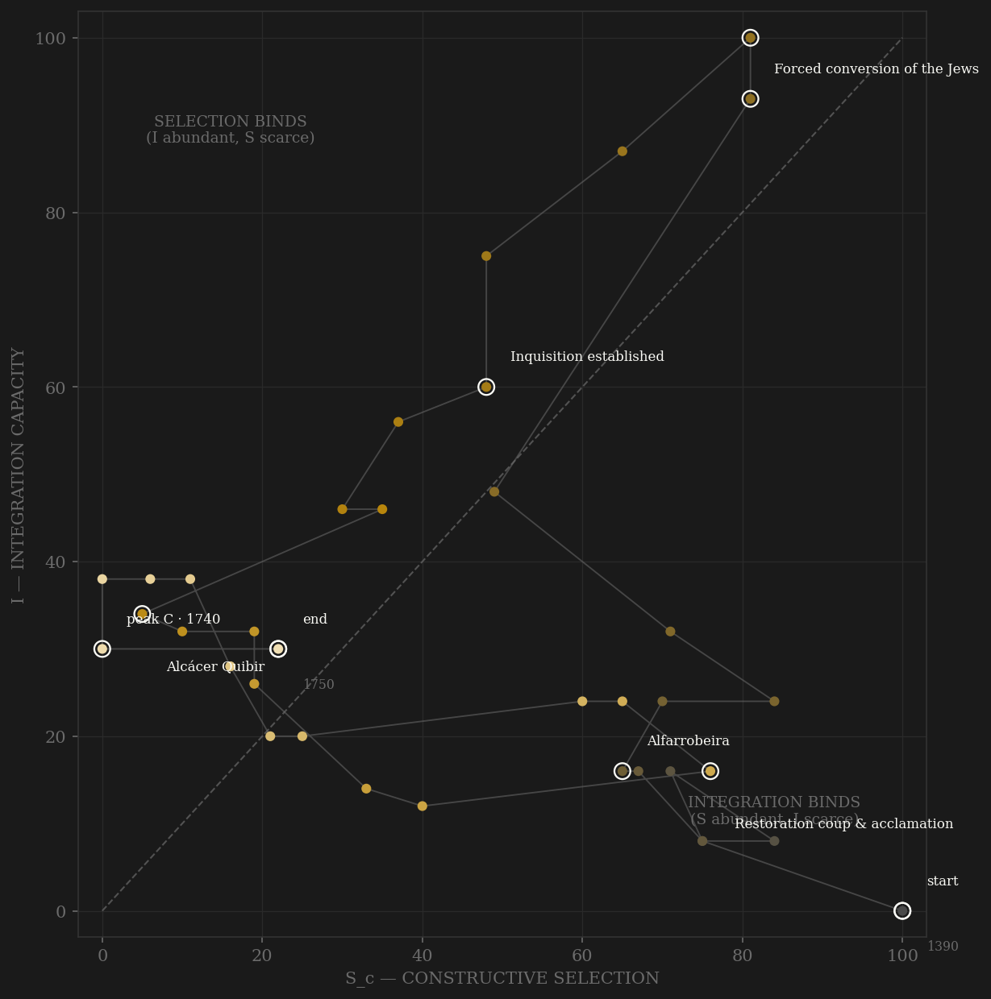

Portugal opens with the roster's cleanest founding contest: an interregnum civil war resolved by ASSEMBLY — the Cortes of Coimbra elects the master of Avis in 1385, Aljubarrota confirms him in the field, and the 1385 generation of new men (a constable at twenty-five, legists writing the legitimacy, merchant Lisbon funding it) replaces the old baronage wholesale. The engine builds through the navigator-patronage market — Henrique's circle paying for skill in any language, the Gomes contract literally leasing discovery to private enterprise — and peaks in the 1510s: Albuquerque's decade, when the Casa da Índia's pilot examinations, the carreira's measured sailing cycle and the Estado's fort chain take the Indian Ocean from its incumbents. Both definitions agree on the decade. The unmaking is a two-act tragedy the ledger codes separately. Act one is the SELF-AMPUTATION: the forced conversion of 1497, the Lisbon massacre of 1506 and the Inquisition from 1536 turn the state on its own commercial class — S_d without battles — and the capital and expertise escape, documented, to Amsterdam, where they finance the Dutch fleets that eat the empire after 1595. Act two is the RENTIER CAPTURE: by the 1560s the Estado's captaincies are sold, inherited and granted in reversion — Boxer's office-sale market — and the empire becomes an annuity. Alcácer Quibir kills the king in Morocco (a field catastrophe abroad: B by locus) and the void it leaves delivers the realm to Habsburg Madrid — S_d by consequence, the causal chain the ledger carries explicitly. The Restoration of 1640 shows the machinery could still coordinate: forty conspirators, one morning, a Cortes reborn to vote war taxes, a generation of within-rules bargaining while the frontier war is won. And then the gold. From the 1690s Minas Gerais frees the crown from taxation, and therefore from asking: the Cortes of 1697–98 are dismissed and none meet again until 1820 — the resource-curse death of channel C, dated to the decade. Measured complexity — gold arrivals, Maddison GDPpc, Lisbon's scale — climbs for another two generations of velvet stagnation and peaks in the 1740s, 230 years after the engine: LONG, the golden anesthesia in one number. The arc ends on the morning of 1 November 1755, when nature does what no army had: erases the entrepôt's physical plant. The earthquake is E, not S_d — and Pombal's response is the state-capacity evidence that the machine, unbargained-with for sixty years, could still act.

The trajectory enters mid-selection, near-zero integration — an elected dynasty with no network — and for a century it climbs the selection wall almost alone: the patronage market runs decades ahead of the feitoria chain it is building. Integration arrives in a rush at the century's turn (Mina, the Cape route, the Casa) and the path shoots to the top-right corner by the 1510s — the fastest integration climb in the roster, three decades from coastal kingdom to world system. It never holds the corner. The Inquisition decades walk the path DOWN the selection axis while integration erodes more slowly — self-amputation first, network decay second — and the 1580 absorption drops both axes at once: the path falls to the bottom-left faster than any polity in the sample outside conquest cases. The Restoration hook is the diagnostic excursion: 1640–1668 the path jumps back up the selection axis (conspiracy, Cortes reborn, war won) while integration barely moves — contest recovered without network. Then the terminal staircase, the inverse of the climb: from the 1690s the path walks flat along the bottom — selection near zero, integration held at 30–38 by the gold fleets alone — while C compounds off-chart. At peak C (1730s–40s) the binder is SELECTION at full depth: Sc 0 against I 38 — a polity with no contest engine at all, floating on a windfall. The extraction-without-integration flag matters here: the metropole's interior never entered the network — the wealth transited Lisbon, it did not integrate Portugal — so even the held I is harbor-deep. The path dies at the S=0 wall the way Rome's did, but Portugal arrives there rich.
Coded by locus and target, never by outcome. Portugal supplies the roster's most explicit CAUSAL-CHAIN pair: Alcácer Quibir 1578 is B — the king and army annihilated in Morocco is a field catastrophe ABROAD, core untouched — but the succession void it leaves triggers the 1580–81 war and absorption, which is S_d: Alba's army in Lisbon, Terceira reduced, the realm's foreign policy moved to Madrid. The ledger codes 1578 B and 1580 S_d and writes the causal note between them: the dynasty died abroad, the state died at home. The second demonstration is S_d WITHOUT BATTLES: the forced conversion, the Lisbon massacre and the Inquisition's confiscation waves attack the polity's own commercial-coordination class by statute and tribunal — the Yuanyou precedent at maximum scale, and the measured consequence (Sephardi capital financing Amsterdam's war on the Portuguese empire) closes the loop. Third, the 1755 earthquake is deliberately NOT in this ledger: nature attacking the machinery is entropy, not selection — it is coded E=10 with Pombal's grid-plan response as capacity evidence. Bloodless coups (1640 palace seizure, the 1667 deposition of Afonso VI) are coded S_d-lite at honest amplitudes: the target codes, not the body count.
| YEAR | CONFLICT | CODE | CODING RATIONALE |
|---|---|---|---|
| 1385 | Interregnum civil war & Aljubarrota | Sd | The 1383–85 crisis — Ourém killed in the palace, Lisbon besieged, the Castilian party purged — is founding S_d (internal locus); Aljubarrota itself, Castile beaten in the field, is the founding B: same crisis, two addresses, coded apart |
| 1415 | Ceuta | Sc | The crusading contest opens — external conquest, knighthoods won by assault; the fortress will eat money for three centuries (E), but the locus is Morocco |
| 1437 | Tangier disaster | Sc | The crusade capitulates ABROAD — the Infante Fernando dies hostage in Fez: field catastrophe external, machinery intact (Poltava rule avant la lettre) |
| 1449 | Alfarrobeira | Sd | The regent Pedro — the realm's best administrator — killed by the royal army after Bragança's faction turns the young king: the crown destroying its own head of government; his men proscribed |
| 1476 | War of the Castilian Succession (Toro) | Sc | Lost ashore at Toro, WON at sea (Guinea 1478) — Alcáçovas 1479 partitions the Atlantic: peer contest settled by treaty, Mina secured |
| 1483 | Braganza & Viseu executions | Sd | João II beheads the realm's greatest duke at Évora and stabs Viseu with his own hand — the crown attacking its own high nobility; pure locus S_d |
| 1497 | Forced conversion of the Jews | Sd | Synagogues seized, children taken to force baptism — the state assaulting its own commercial class's coordination machinery: S_d without a battle; the self-amputation arc opens |
| 1506 | Lisbon massacre | Sd | ~2,000 New Christians murdered in three days — the commercial elite's physical security broken; the ringleaders hanged, the precedent set |
| 1509 | Diu (Almeida) | Sc | The Mamluk-Gujarati fleet annihilated — the Indian Ocean taken from its incumbents: peak peer contest, the engine's decade |
| 1536 | Inquisition established | Sd | The persecution institutionalized — arrests, confiscations, the first auto-da-fé 1540: two centuries of the state burning its own merchant network; the capital's escape to Amsterdam is documented (Boxer) and finances the empire's enemies |
| 1538 | Diu (Ottoman siege) | Sc | The Ottoman-Gujarati siege broken; 1546 again (Castro's relief) — the Estado defending the ocean at full function |
| 1578 | Alcácer Quibir | Sc | The king, the nobility's flower and the army annihilated IN MOROCCO — a field catastrophe ABROAD: B by locus, core untouched. The succession void it leaves is coded at 1580 — the causal chain carried, not blurred |
| 1580 | Succession war & Habsburg absorption | Sd | Alba's army takes Lisbon, António broken at Alcântara and Terceira (1582–83) — a war for the throne on core soil: S_d BY CONSEQUENCE of 1578; the dynasty died abroad, the state died at home (separate ledger row, one arc annotation — the 1578 tick carries the pair) |
| 1624 | Dutch global war (Bahia, Hormuz, Pernambuco) | Sc | The empire-eating peer contest 1595–1663: Hormuz 1622, Bahia lost/retaken 1624–25, Pernambuco 1630 — fought across three oceans, the metropole's machinery untouched |
| 1637 | Évora (Manuelinho) risings | Sd | Tax revolt in municipal-charter language against the union's fiscal demands — internal locus, suppressed; the conspiracy's recruiting pool |
| 1640 | Restoration coup & acclamation | Sd | Forty conspirators, one morning, Vasconcelos defenestrated — minimal blood, S_d-lite by locus (a throne seized); the CORTES OF 1641 that acclaims the new king is channel C reborn: elite coordination SUCCEEDING, both faces coded |
| 1665 | Restoration war (Ameixial, Montes Claros) | Sc | The war vs Spain won on the frontier 1640–68 — Elvas, Ameixial, Montes Claros: peer contest with the machinery intact throughout; peace 1668 recognizes the dynasty |
| 1667 | Palace coup (Pedro deposes Afonso VI) | Sd | The king confined at Sintra, his marriage annulled and re-annexed with the throne — bloodless deposition, S_d-lite at honest amplitude |
| 1755 | Lisbon earthquake | E | 1 Nov 1755 — earthquake, tsunami, six days of fire: ~30–50k dead, the Baixa erased. EXOGENOUS catastrophe = E, NOT S_d: nature, not politics, attacked the machinery. Pombal's response (dead buried, prices fixed, the grid) = state-capacity evidence |
| COMPONENT | GRADE | BASIS |
|---|---|---|
| S_c A — Elite-entry (0.40) | ○ scholar-coded | No measured entry corpus exists — coded from Disney (A History of Portugal and the Portuguese Empire, v1 chs. 5, 10, 17) and Boxer (The Portuguese Seaborne Empire chs. 11–13). Anchors: the 1385 new-men generation legitimated by Cortes acclamation; the navigator-patronage market (Sagres/Lagos — pilot, shipwright, cartographer careers open to skill including foreigners); the Casa da Índia technical ladder (pilot examinations, cosmographer-major); New Christian incorporation THEN the SELF-AMPUTATION (1497 conversion, 1506 massacre, Inquisition 1536 — the showcase: the state burning its own commercial class, the Amsterdam exodus documented in Boxer chs. 11–12, the pardons SOLD 1601/1605 pricing the persecution); DECAY: fidalgo capture — Estado offices sold/inherited/in reversion by the 1560s (Boxer's office-sale market, ch. 13), Braganza-era limpeza closure; Pombal's reopening arrives AT the terminal row (1768–73 beyond window — noted, not scored) |
| S_c B — External rivalry (0.30 cap) | ○ scholar-coded | War-years ordinal, locus-cleaned: Castile wars (Aljubarrota 1385 founding B), Morocco crusading (Ceuta 1415, Tangier 1437, ALCÁCER QUIBIR 1578 = B by locus with the causal note to 1580), Indian Ocean contest (Diu 1509/1538/1546), Dutch global war 1595–1663, Restoration war 1640–68. Excised to S_d: the 1383–85 interregnum, the 1580–81 succession war, the 1640 coup. This channel alone = the frozen Sc_v1_combat column |
| S_c C — Internal within-rules (0.30) | ○ scholar-coded | Cortes strong early: Coimbra 1385 ELECTS the king, the 1439 Cortes makes the regency, 25+ diets under the early Avis; municipal câmara politics throughout; Tomar 1581 extracts the autonomy charter at the moment of death; REBORN 1641–68 (the Restoration Cortes voting the war). THE RESOURCE-CURSE DEATH — the ledger's centerpiece: Brazilian gold freed the crown from taxation and therefore from bargaining; the last Cortes met 1697–98 and none again until 1820 — the gold killed parliament (Disney v1 ch. 17; Boxer, The Golden Age of Brazil ch. 2). War makes parliaments; gold kills them |
| S_d — Destructive | ○ scholar-coded | Locus-and-target ledger: 1383–85 founding civil war, Alfarrobeira 1449, the 1483–84 ducal executions, the persecution waves (1497/1506/1536+ — S_d by locus, no battle required: the state vs its own coordination class), the 1580–81 absorption (by consequence), 1637 Évora, 1640 coup (S_d-lite), 1667 coup (bloodless, honest amplitude). Távora 1759 falls AFTER the window — noted, not scored. Per-decade rationales in data/raw/portugal/coding_ledger_v2.csv |
| I — Integration | ◐ measured (0.40) + ○ coded (0.60) | MEASURED: carreira da Índia outbound voyages/yr (Godinho/Boxer via historic_master_v015, 1497–1700 spliced; ~13/yr 1500s → 1–2/yr 1700; TRUE ZERO pre-1497 — the Cape route did not exist; 1710–50 continued at Boxer-order 1.5/yr, flagged) — the sailing-cycle regularity series. Coded: feitoria chain (Arguim ~1445 → Mina 1482 → Sofala-Hormuz-Goa-Malacca-Macau), Casa da Índia clearing house, Brazil integration (captaincies 1530s → governor-general 1549 → Brazil Company convoys 1649 → gold fleets). THE EXTRACTION-WITHOUT-INTEGRATION FLAG: internal roads and markets stayed medieval — the metropole stayed poor while the empire was rich; the held late-I is harbor-deep (flagged in I_notes and here) |
| C — Complexity | ◐ measured + anchors | Skipna mean (≥2 rule enforced): Maddison GDPpc (annual 1530–1750, Palma–Reis backcast; NaN before 1530, never interpolated); Lisbon population (Bairoch/Chandler anchors 40k→180k); urbanization (de Vries anchors); PEPPER IMPORTS (Godinho/Boyajian, measured 1501–1640 — the Casa's trade arc, ~1,500 t/yr 1510s → 59 t 1640s); BRAZILIAN GOLD arrivals (Boxer/consensus anchors: 0.5 t/yr 1690s → ~15 t/yr 1740s peak — the gold arc carries late C the way pepper carries early C; true zero pre-1690). Navigation-science arc folded into coded I, not C — C stays measured-only |
| E — Entropy / R — Population | ◐ measured strand + ○ coded | THE CARREIRA SHIPWRECK-RATE ARC — MEASURED: Boxer loss counts / Godinho sailings = losses per outbound sailing, ~2% (1510s) → ~15% (1590s): the loss rate rises ~5× as maintenance, overloading and crewing decay while sailings fall — a measurable entropy series (Boxer PSE ch. 9; the História Trágico-Marítima its literary residue); z-spliced 50/50 into the coded backbone 1500–1640. Coded anchors: Tangier ransom drain, 1521–22 famine, 1531 earthquake, 1569 plague (~50k dead in Lisbon), the pepper-contract insolvencies, bullion inflation, union war finance, sugar depression, gold-era Dutch-disease stagnation (Methuen 1703 + gold = manufactures dead), TERMINAL 1755 = 10. R = metropole millions (Maddison + Disney anchors; ~1.0M through the 15th c. → 2.4M 1750) |
37 decade rows (1390–1750) built from local data by scripts/build_portugal_sicre.py (2026-07-06), STRAIGHT to S_c definition v2 (contestability composite 0.40/0.30/0.30, AMENDMENT_S_definition_v2.md); per-decade channel scores and rationales in data/raw/portugal/coding_ledger_v2.csv, component audit in components_audit.csv, source grading in SOURCES.md. BOTH DEFINITIONS REPORTED per the amendment: v2 contestability engine 1510 (the Albuquerque decade) → C 1740 = +230 LONG; v1 external-war-only engine 1510 → C 1740 = +230 LONG — the definitions AGREE and the lag is not a coding artifact: it is the GOLDEN ANESTHESIA — measured complexity (gold arrivals + Maddison GDPpc + Lisbon scale) sustained by an exogenous windfall for two generations after the contest engine died; the Cortes-death (last diet 1697–98, none until 1820) dates the C-channel kill to the same decade the gold arrives. Robustness: unsmoothed +230/+220; smoothed C near-ties 1740 (99.67) vs 1750 (99.5) — either read stays LONG. C pre-1530 rides Lisbon+urbanization(+pepper) only (Maddison starts 1530 — never interpolated); the 1750 Lisbon anchor predates the earthquake's demographic hit (flagged). The 1755 earthquake is coded E=10, NOT S_d (exogenous locus); Pombal's response is carried as state-capacity evidence in the notes. Frozen protocol throughout: 3-decade centered rolling mean, engine = min(S_c, I). Rebuild: build_portugal_sicre.py, then polity_report.py --slug portugal.